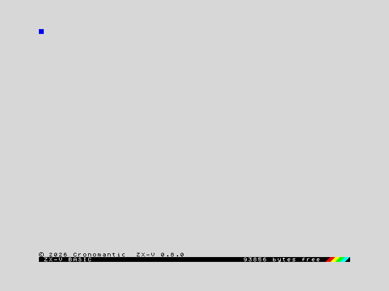
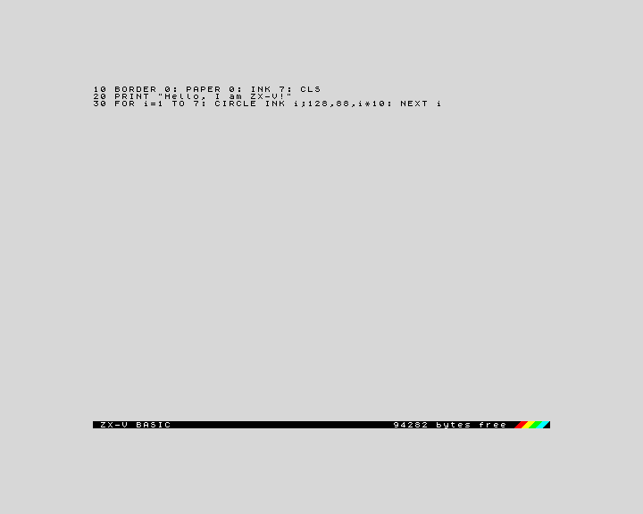
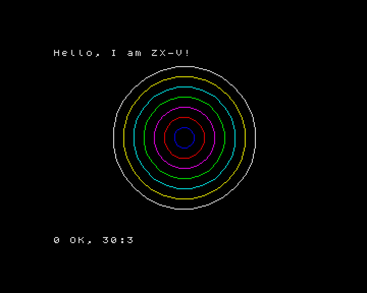
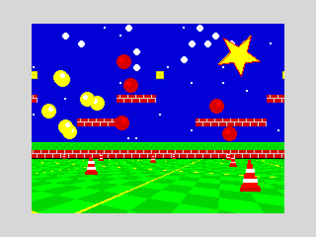

Getting started
This page takes you from nothing to typing and running your first program in about five minutes. You do not need to know anything about the ZX Spectrum or about programming.
What is ZX-V?
ZX-V is a small 32-bit home computer, new but in the spirit of the 1980s ZX Spectrum. Like the computers of that time, you switch it on and it is ready for you to type: it starts straight into BASIC, a simple programming language. It has 15 bright colours as standard (and palettes to pick others), two music chips, an SD card for your files, and it can also run fast programs written in C.
ZX-V is both a real machine, built from two Raspberry Pi Pico 2 boards, and an emulator that runs the very same software on your PC or in your browser. Everything on this page works the same in all of them.
Choose how to use it
| Option | What you need | Best for |
|---|---|---|
Desktop emulator (zxv) |
A PC with Windows (64-bit) or Linux (x86-64) | Most people: programming, playing, developing |
| Web version | A modern browser (Chrome, Edge, Firefox...) | Trying it without installing anything, or putting it on a website |
| Real hardware | The ZX-V board (or a protoboard), two Pico 2, a USB keyboard and an HDMI screen | The full experience; see Build the hardware |
Download
Everything is on the project's GitHub page, under Releases. The latest release has these packages:
| File | What it is |
|---|---|
zxv-windows-x64.zip |
The emulator for Windows |
ZX-V-…-x86_64.AppImage |
The emulator for Linux (x86-64) in a single file, with everything inside |
zxv-linux-x86_64.tar.gz |
The emulator for Linux (x86-64), using your system's Qt and SDL |
zxv-web.zip |
The web version |
zxv-uf2.zip |
The firmware for the two Picos of the real machine (see The firmware) |
Windows: unzip zxv-windows-x64.zip anywhere (for example on your
desktop) and double-click zxv.exe. Nothing else needs installing.
Linux: the easiest is the AppImage: make it executable and open it
(chmod +x ZX-V-*.AppImage, then double-click it or run
./ZX-V-*.AppImage). It brings Qt and SDL inside and works on most
distributions from 2022 onwards (Ubuntu 22.04, Debian 12, Fedora 36...). The
other programs of the package run through it too:
./ZX-V-*.AppImage zxv-cli --help. If it complains about FUSE (in a container,
for example), add --appimage-extract-and-run.
Or unpack the archive (tar xzf zxv-linux-x86_64.tar.gz) and run
zxv-linux/zxv. It needs Qt 6 and SDL 2, which most desktops already have; on
Debian or Ubuntu:
sudo apt install libqt6widgets6 libsdl2-2.0-0
Web version: unzip zxv-web.zip and double-click index.html. It works
straight from your disk, without a web server.
The Windows and Linux packages also bring this documentation, to read offline:
open docs/index.html, or Help > Documentation in the emulator.
The first boot
Open the emulator. After a moment you see this:

That is all: a light grey screen, a copyright line, and a black bar at the bottom. The bar is the BASIC editor: ZX-V BASIC on the left, and on the right how much memory is free for your program (about 94,000 bytes). The coloured stripes are a tribute to the Spectrum 128.
The first time you open zxv, it also creates a folder called ZX-V in your
Documents folder and copies the example programs into it. That folder is the
machine's SD card: everything you save goes there. More about it
below.
The emulator's own menus and the machine's messages can be in English or in Spanish: choose in Options > Language. In the web version, it is View > Options....
Your first program
A program is a list of numbered lines. Type this line exactly as it is and press Enter:
10 BORDER 0: PAPER 0: INK 7: CLS
The line moves up into the listing, and the keywords (BORDER, PAPER...) are
shown in capital letters. You can type them in capitals or in small letters,
as you prefer: just type every word letter by letter, as on any computer.
Now type the other two lines, pressing Enter after each one:
20 PRINT "Hello, I am ZX-V!"
30 FOR i=1 TO 7: CIRCLE INK i;128,88,i*10: NEXT i
Your screen should look like this:

If you make a mistake, move the cursor with the arrow keys and fix it as in a text editor: Backspace and Delete erase, Enter stores the line again. If a line has an error, the machine makes a buzzing sound and leaves the cursor where the problem is.
Now type RUN and press Enter. The program runs:

Line 10 paints the border and the background black and chooses white for the
text, line 20 writes a message, and line 30 draws seven circles, one in each
colour. The message at the bottom, 0 OK, 30:3, means the program ended
without errors, at line 30, statement 3. Press a key to go back to the
editor, where your program is still waiting. (That key is also typed into the
editor, so if it was a letter, just delete it.)
Some keys worth knowing from the start:
| Key | What it does |
|---|---|
| Enter | Store the line, or run a command typed without a line number |
| Esc | Stop a running program (this is the BREAK key); in the editor, undo the changes to the current line |
| Tab | The EDIT key: opens the editor's options menu (renumber, show the program's screen, print) |
| Arrow keys, Home, End, Page Up, Page Down | Move around the listing |
To try something different, type NEW and press Enter: it erases the
program so you can start again.
The BASIC course starts from here and teaches you the language step by step.
The built-in examples: the ROM: drive
ZX-V comes with a read-only disk full of examples, the ROM: drive (on the
real machine it is stored inside the CPU Pico, so it is always there). To see
what is on it, type:
CAT "ROM:"
| File | What it is |
|---|---|
platformer.zvb and platformer.gfx |
A platform game written in BASIC, and its graphics |
rps.bas |
Rock, Paper, Scissors in BASIC, as text: LOAD "rps" loads it and LIST shows it |
sentry.bas |
Sentry, defend the cities from the missiles with the mouse, the keyboard or a joystick, in BASIC |
estela.zxv |
Estela, a three-level space shooter |
route128.zxv |
Route 128, a race against the clock along a road with bends and blind crests |
muncher.bas |
Muncher, eat the dots in the maze without being caught by its four chasers, in BASIC |
cascade.bas |
Cascade, line up three gems of a colour before the well fills up, in BASIC (with cascade.gfx, cascade.pt3 and cascade.afb) |
mine.zxv |
The Mine, dig and gather diamonds among falling boulders |
street.zxv |
Street Justice, brawling through the streets against the neighbourhood gangs |
umbra.zxv |
Umbra, a 3D maze in the dark |
keep.zxv |
The Keep, a four-floor dungeon adventure |
chess.zxv |
ZXV Chess, chess against the machine or for two players |
gonesilent.zxv |
Gone Silent, a 3D adventure in an abandoned mining colony |
graphics.zxv |
A graphics demo: scrolling scenery, bouncing balls, a spinning star and a 3D floor |
scroll.zxv |
Smooth scrolling over a landscape four screens wide, with parallax |
digital.zxv |
Digitised sound played through the music chip |
hello.zxv |
The smallest example of a native program |
boardtest.zxv |
The board test: screen, clock, SD card, keyboard, gamepads, mouse and sound, one by one |
files.zxv |
A native program that creates, reads and lists files on the SD card |
gfxedit.zxv |
An editor for sprites, tiles and maps on the machine itself |
player.zxv |
A player for the music (PT3...) and sound effects (AYFX) on the card |
The files ending in .zxv are native programs, written in C. Load one with
LOAD:
LOAD "ROM:graphics"

Press any key to go back to BASIC. Try LOAD "ROM:estela" too: it is a
complete game (arrow keys or O, P, Q, A to move, Space or M to fire, Esc to
quit).
BASIC games that load more files, like the platform game, find them on the
ROM: drive by themselves: LOAD "ROM:platformer". You can also go into the
drive and load them from there:
CD "ROM:"
LOAD "platformer"
CD "SD:" takes you back to your SD card.
When a native program ends, you are back in BASIC with the report
0 OK(or aWreport if the program ended with an error), but any BASIC program you had in memory is gone: the native program used that memory. Save your work first.
Saving and loading your programs
Your programs are saved on the SD card. In the desktop emulator this is the ZX-V folder in your Documents (you can choose another one in File > SD card). To save the program in memory, give it a name:
SAVE "circles"
This creates the file circles.zvb on the card. To see what is on the card,
type CAT. To load the program again later:
LOAD "circles"
You do not need to type the extension: LOAD looks for circles.zvb, then for
circles.tap, circles.zxv and circles.bas, then for a file called just
circles. The examples copied to the
card the first time can be loaded the same way, without ROM::
LOAD "estela".
File names can only use unaccented letters, digits and some symbols, up to 63 characters; capitals and small letters count as the same name.
In the desktop emulator, File > Save program... (Alt+G) does the same as
SAVE with a file dialog.
If you see U No SD card, the emulator is running without a card: choose one
in File > SD card.
Opening files from your PC
You can open files from anywhere on your computer with File > Open...
(Alt+O), by dragging them onto the emulator window, or by naming them when you
start it (zxv game.zvb):
| File | What happens |
|---|---|
.zvb |
A ZX-V BASIC program, the format SAVE uses: it is loaded with LOAD, as on the machine |
.zxv |
A native program for ZX-V: it is loaded and run |
.tap, .tzx |
A Spectrum tape file: it is loaded with LOAD, as on the machine, for BASIC programs made for the ZX Spectrum |
.bas |
A BASIC listing as plain text: it is loaded with LOAD, as on the machine |
.txt |
A text listing: it is typed into the editor for you |
.zxvs |
A snapshot: the whole machine, exactly as it was when the snapshot was saved |
.img, a folder |
It becomes the SD card |
If the program is not on the SD card, the emulator asks whether to copy it to the card or to use its folder as the card. See The emulator for the details.
If you know the Spectrum: Spectrum
.tapand.tzxfiles with BASIC programs load and run, including multi-part tapes (a loader followed byLOAD ""). Z80 machine code, however, cannot run on ZX-V, so most commercial Spectrum games will not work.
Where to go next
- Learn BASIC: a course from scratch, ending with a complete game.
- The editor and the BASIC reference.
- The emulator: menus, keys, snapshots, the web version and all the options.
- The machine: what ZX-V can do: screen, colours, sound, memory and files.
- Native programs (SDK): write fast programs and games in C.
- Build the hardware: make your own real ZX-V.